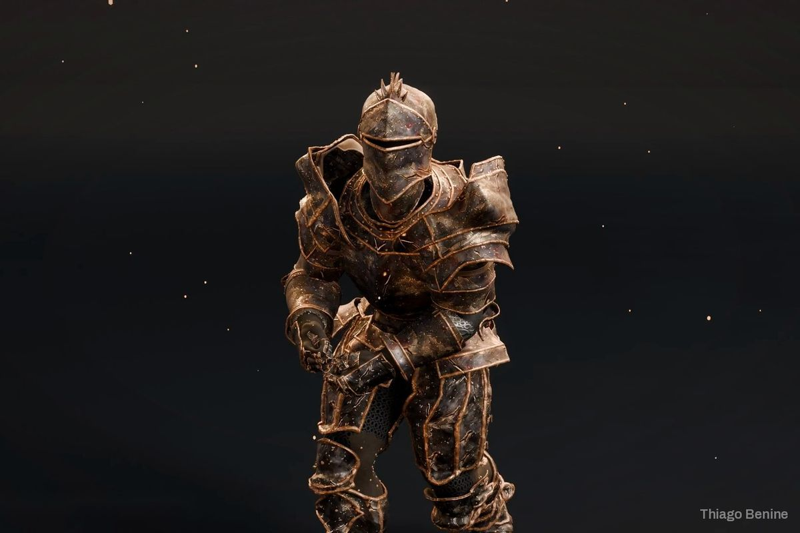
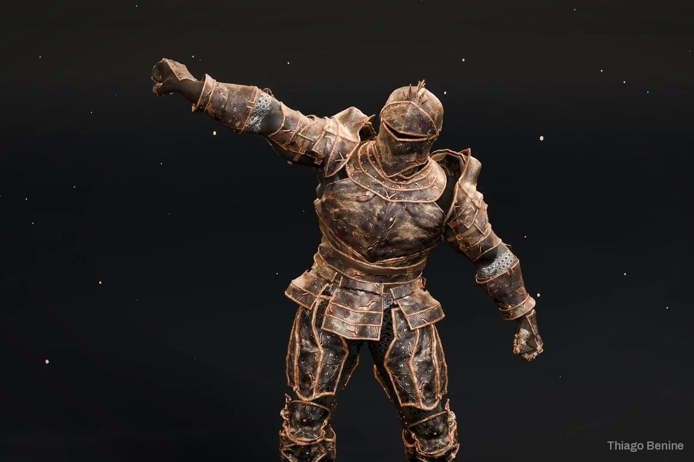
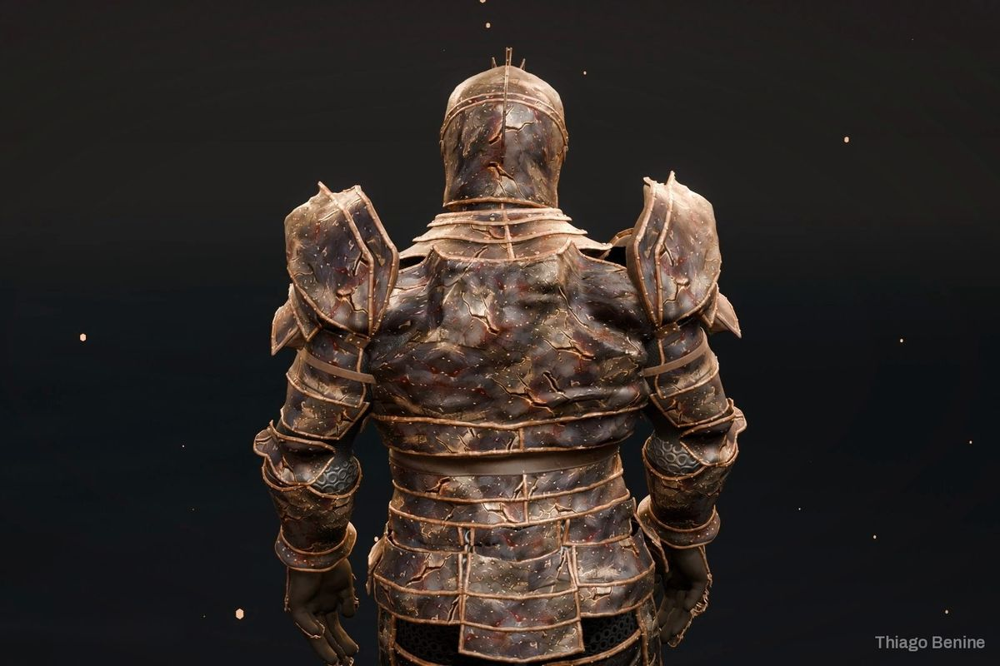
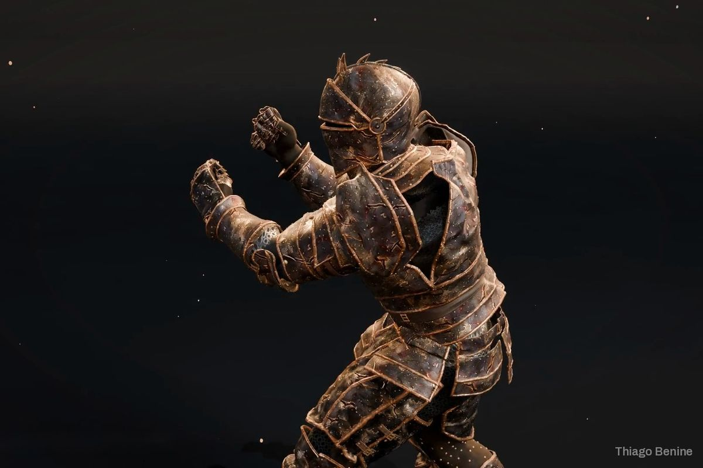

Rig de armadura modular 3D com troca de peças
Armadura em partes intercambiáveis, com 13 animações, exportada para motor de jogo.





Sobre o projeto
Um desenvolvedor de jogos precisava de uma armadura em que cada peça pudesse ser trocada sem quebrar a animação. A armadura foi preparada no Blender com rig compatível com o Mixamo, 13 animações e exportação em FBX e GLB, testada no Godot. O trabalho foi além do pedido e ficou pronto bem antes do prazo.
O que foi entregue
- Armadura modular com rig
- 13 animações
- Exportação em FBX e GLB
- Teste no Godot
Avaliação do cliente
5,0 de 5
Muito bom, atendeu bem o pedido, fez muito mais do que o solicitado e concluiu bem antes do prazo.